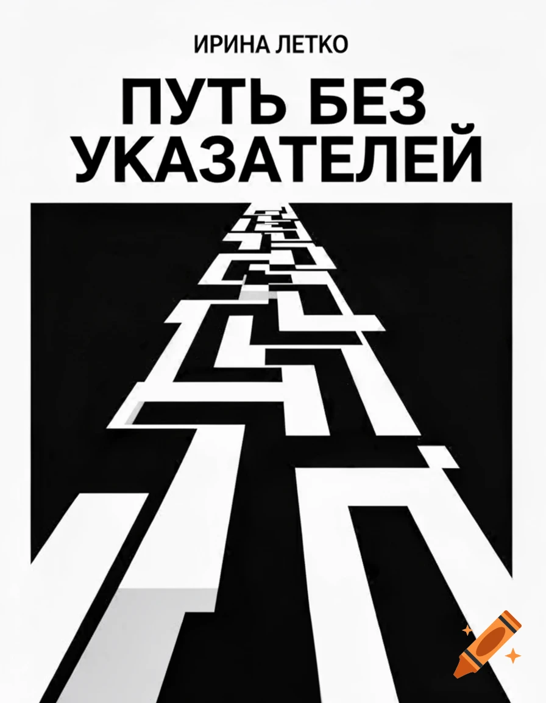

равновесие
События происходят на
необычных удивительных,
непохожих друг на друга
планетах. Иногда страшных
и опасных, иногда
прекрасных и романтичных.

Путь без указателей
фантастический роман
«ах если б каждый из «мечтателей»
Сумел своим умом дойти,
Что лучше путь без указателей,
Чем указатель - без пути!»
(Стнислав Ежи Лец).